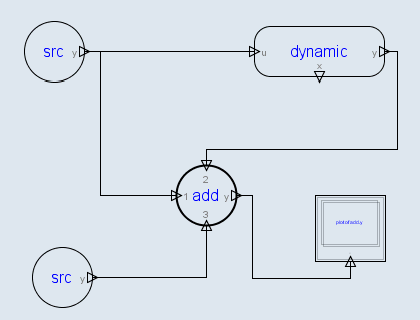

An Adder may have up to 3 inputs, but only 1 output. The inputs are named “1”, “2”, and “3”, and the the output is named as “y”.

All the connected input must have the same dimension.
The input vectors from the connected input connectors are summed up to provide the output vector.